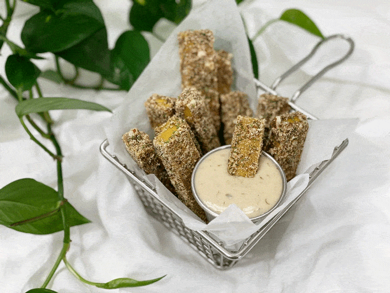
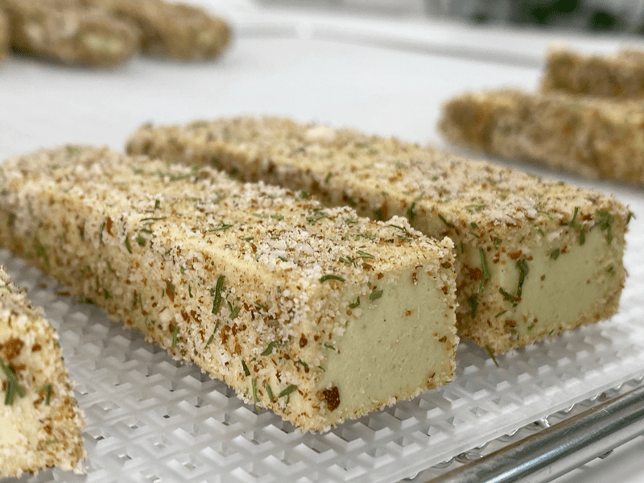

Sweet and Spicy Mustard Cheese Sticks | Vegan | Oil-Free
One day, I went hog wild and created two large batches of my Vegan Sweet and Spicy Cheese. I am not really sure what the heck I was thinking. But then again, it is nothing for me to make an overabundance of food… I do like to share. But, the days were busy, and the cheese was put into the fridge and forgotten about until later in the week.

Knowing that we couldn’t possibly eat it all before it went bad, I decided to do an experiment and see how the cheese with agar would dehydrate. Move over kale chips! I am not saying that it is good to eat this cheese in the same abundance as a person would with kale chips… I am just referring to the addicting flavor.
Here is the crucial thing with this recipe… The first time you make it, keep checking the cheese sticks as they dry. Taste test and look for the texture that you want. Personally, I found all levels of dryness delicious.
The texture goes from soft to chewy, never really getting hard. But I am warning you; it is hard to stay out of the dehydrator while they are drying. Once you find that perfect texture that you are happy with, jot it down for the next time you make them.
You can cut the cheese sticks into any shape or size that you want. I even cut some up into cubes and used them as croutons on my salad. Hot-diggity-dog… they were terrific.
They taste amazing all on their own, but they also are lovely dipped into the Discovered Valley Ranch Dressing. I do want to clarify that they are not stringy like the cheese sticks that you buy from the grocery store. But they have an excellent mouthfeel, and the flavor is quite amazing. The more it dries, the more intense the flavor becomes.
The day that I made these sticks, some friends came over just as I was taking them out of the dehydrator. Between the four of us, they were ALL gone within 30 minutes. It happened so innocently too… we just kept talking, nibbling, talking, nibbling, and before we knew, they had disappeared.
I did the nutritional data for the whole recipe; that way, you can just divide the quantity you created since we can make so many fun shapes and sizes. I can’t promise that I will do this for every recipe, but I am going to give it my best effort since many people email me, asking for this information. Keep in mind that the numbers can change based on what brands of you use, so utilize it as a baseline. I hope you enjoy and please comment below if you try the recipe. Blessings, amie sue
Nutritional Data:
Whole recipe ~ Calories 1,829 / Fat 146 g / Carb 88 g / Fiber 39 g / Protein 72 g
 Ingredients:
Ingredients:
Cheese base:
- 2 cups (256 g) raw sunflower seeds, soaked
- 1 1/2 cups (320 g) water
- 2 1/2 Tbsp (25 g) lemon juice
- 3 Tbsp (38 g) raw Sweet & Spicy Mustard
- 1 Tbsp (13 g) raw apple cider vinegar
- 1 Tbsp (20 g) maple syrup
- 1/4 cup (30 g) nutritional yeast
- 1 tsp (6 g) Himalayan pink salt
- 1 tsp (3 g) onion granules or powder
- 1 tsp (2 g) garlic powder
- 1 tsp (4 g) ground cumin
- 1/2 tsp (1 g) turmeric
Agar gel:
Coating:
- 6 Tbsp (70 g) raw almonds, ground
- 1/2 tsp (3 g) Himalayan pink salt
- 1 tsp (3 g) cumin
- 2 tsp (1 g) dried dill
Preparation:
Cheese base:
- After soaking the sunflower seeds, drain and rinse them. Place in a high-powered blender.
- Add 1 1/2 cups water, sunflower seeds, lemon juice, mustard, vinegar, agave, nutritional yeast, salt, onion granules, garlic powder, cumin, and turmeric. Blend until creamy; it will be thick. If you have a Vitamix with a plunger, use that to keep the mixture moving. Otherwise, stop your machine occasionally to scrape the sides down.
- Test for grittiness by rubbing it between your thumb and finger. If you feel grit, keep blending.
Agar gel:
- Once the cheese mixture is ready, it is time to make the agar gel. In a small saucepan, bring 1/2 cup of water to a light boil, add the agar. Stir continuously until the agar had dissolved, which can take several minutes. Keep whisking! If it gels up in the pan, return to heat and melt it down again.
- Start the blender and get a vortex going with the mixture. Drizzle in the agar gel and blend until combined. You will need to stay focused and move fairly quickly. Agar will start to set up as it cools.
- Pour into a (9″ x 12.5″) rectangle baking pan and place it in the fridge, uncovered, for at least 30 minutes. I don’t use anything to prepare my molds to help them release once it has set. It is good about just popping out.
- Once the cheese is set and firm, it is time to create the cheese sticks. You can cut these as thick, thin, long, or short that you wish. I cut mine into roughly 1″x4″ sized sticks.
Coating:
- Place the ground almonds, salt, cumin, and dill in a Tupperware-like container, place the lid on it, and shake everything together.
- Coat the cheese sticks in the coating mix and place each piece on the mesh sheet that comes with the dehydrator.
- Dry at 115 degrees (F) for 2-4 hours. The goal is to keep them moist in the center. They taste amazing coming right out of the dehydrator, all nice and warm.
- Store in an airtight container on the counter for up to 5 days. They may last longer but not in our kitchen (if you know what I mean).

© AmieSue.com